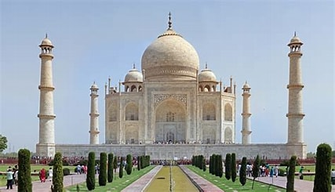
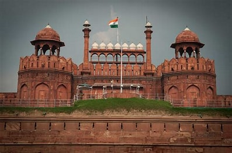
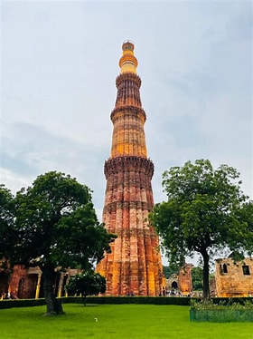

Taj Mahal

The Taj Mahal in Agra, built by Emperor Shah Jahan, is an iconic symbol of love and one of the Seven Wonders of the World.
Red Fort

The Red Fort in Delhi served as the main residence of the Mughal Emperors for over 200 years.
Qutub Minar

The Qutub Minar in Delhi is a UNESCO World Heritage Site and the tallest brick minaret in the world.
Ajantha Ellora Caves

The ancient Caves in Ellora